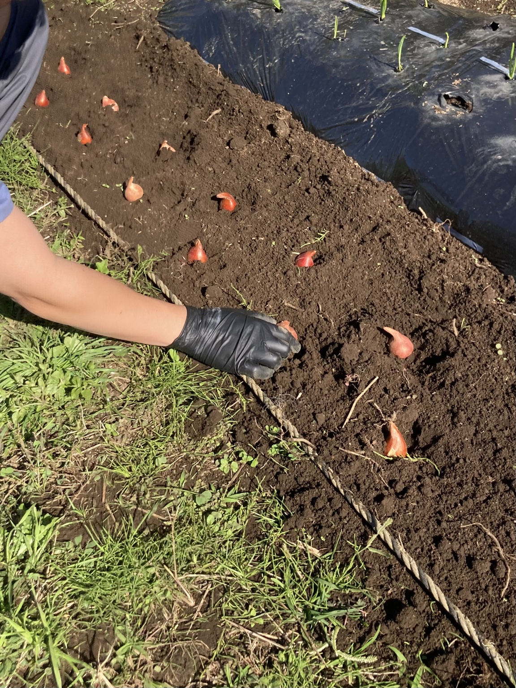
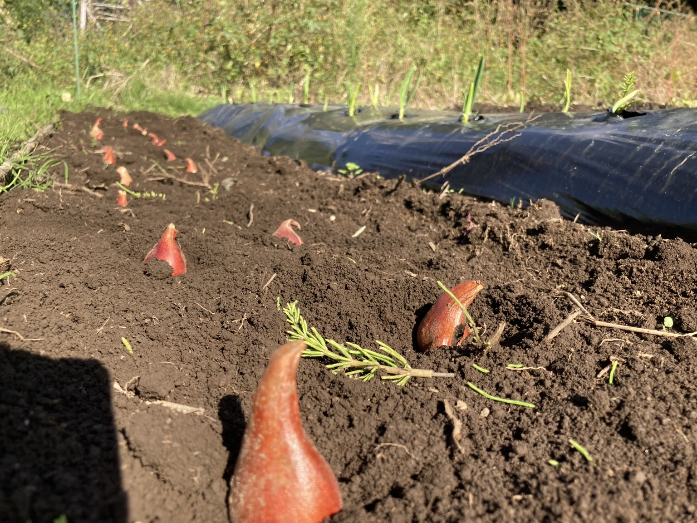
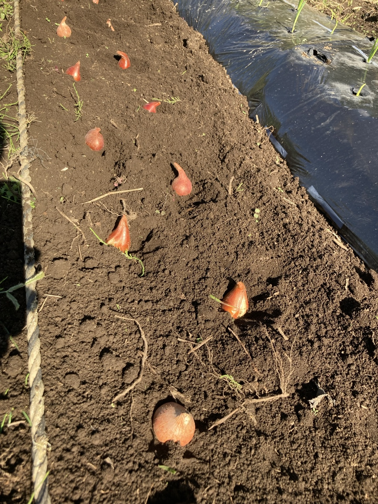
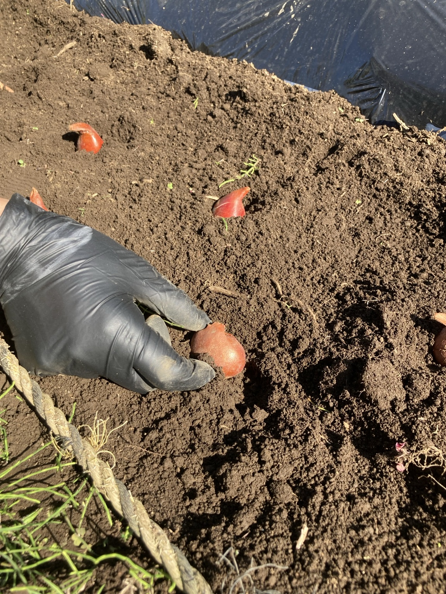

今年もチューリップの球根を植えました。
土の上に球根を並べ、一つずつ植えていきます。今はまだ花のない場所ですが、春にはどんな景色になるだろう。球根を手にしていると、少し先の季節に思いが向きます。
園芸療法でも、この「これからを楽しみにする時間」を大切にしたいと思っています。

植えた場所に、自分とのつながりが生まれる
球根を植えると、それまで何気なく見ていた場所が、「自分が植えた場所」になります。
散歩の途中で立ち寄ったり、窓から目を向けたり。芽が出ているか気になって、見に行くこともあるかもしれません。
花が咲くまでの間にも、植物と関わるきっかけは続いていきます。自分の手で植えた経験が、日々の暮らしの中に、小さな楽しみをつくることもあるのではないでしょうか。

待つ時間を、一緒に過ごす
植えたあとは、しばらく土の上に大きな変化が見えない時期もあります。
そんなときにでも、植えた日の写真を一緒に見返したり、どこに植えたか、どんな球根だったか。写真が、そのときの経験を振り返る手がかりになります！
芽が出たら、その変化を一緒に見つける。つぼみが見えたら、開く様子を気にかける。
園芸療法では、本人の関心やペースに合わせながら、植えた日と、その後の暮らしをつなぐ関わりも大切にしたいところです🌱


春にもう一度この場所で！
春に花が咲いたとき、植えたときの写真と見比べられたらと思います。
球根を並べていた場所に花が咲く。その景色を想像しながら、自分が関わった時間を振り返れるかもしれません。
感じ方や楽しみ方は、人それぞれですが、花の色を喜ぶ人もいれば、芽が伸びていく様子を楽しむ人もいるとおもいます。園芸療法士はそのようにその人が何に心を動かしているのか、そばで見つめていくことが大切です。
土に植えた小さな球根が、春にこの場所を訪れる楽しみにつながっていく。そんな時間を、植物とともに育てていけたらと思います。